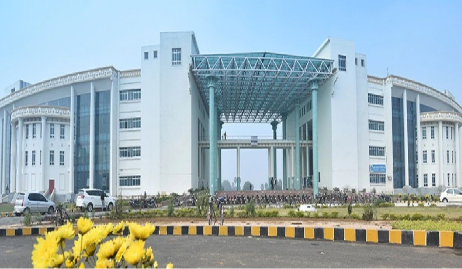
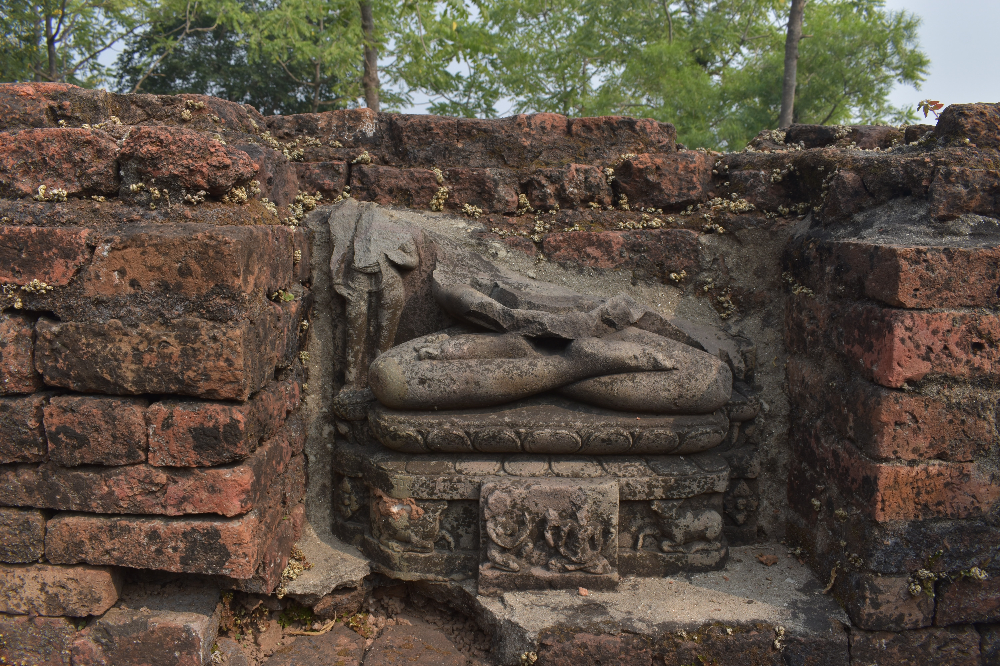
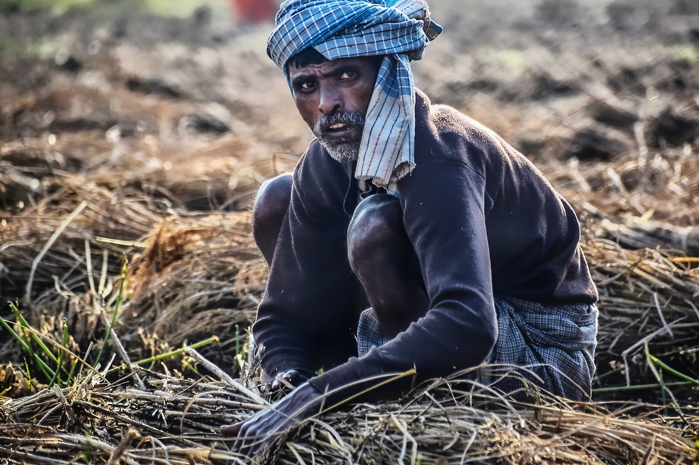

B

In Bihar, the letter "B" represents Buddha, who attained enlightenment under the Bodhi tree in Bodh Gaya. The state has many important Buddhist sites, such as the Mahabodhi Temple, Nalanda University, and Rajgir Hot Springs. The state borders Nepal on the east, and its capital is Patna. It is divided into 38 districts.
I
The letter "I" stands for Ishan, which is the direction North-East in Hindu mythology represents the Indian Institute of Technology Patna, one of the country's most prestigious educational institutions. Bihar is one of the earliest inhabited places in the world and was once home to the ancient Indus Valley Civilization.
H
Symbolically, the letter "H" represents the rich history of state. Dating back to ancient times in Magadha and the Maurya Empire. It is also well known for its contributions to the Indian independence movement, including those of Dr. Rajendra Prasad and Jayaprakash Narayan. As well as numerous important Hindu and Jain sites, Bihar also boasts the Mahabodhi Temple complex at Bodh Gaya, a UNESCO World Heritage Site.
A
The letter 'A' symbolizes the state's abundant agricultural economy, where the sweetest fruits and freshest vegetables flourish, and cows graze in the vast fields. But "A" also represents the state's vivid art and culture, where Madhubani paintings, pulsating folk music and dance forms like Bidesia and Jat-Jatin, and the magnificent Chhath Puja celebrations dazzle and thrill the senses. And if that's not enough, Bihar's ancient Buddhist and Jain temples stand tall, beckoning visitors from around the globe to explore and discover their secrets.
R

The letter "R" stands for the rivers that flow through Bihar, including the Ganges, Kosi, and Gandak. These rivers have played a crucial role in the agriculture and economy of Bihar, and also hold religious significance for the people of the state. Bihar also known for its rich culture literature, and music. The famous classical singer Bharat Ratna Pandit Bhimsen Joshi hailed from Bihar. The state is also home to the famous Maithili and Bhojpuri languages.